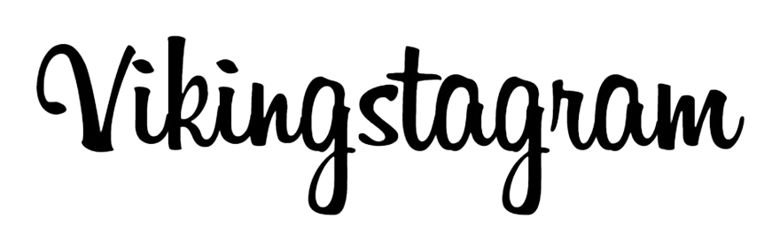

LiliasTheSlyViking
Wolfskog


2,406 likes
LiliasTheSlyViking
Travelling from Fjordhelm to Shieldhaven today!
#VikingStyle #SeaGreen
Where my story began, amidst the fjords of my homeland Just finished my trip from Stormvik to Wolfskog.
#BornViking #@sea
In the footsteps of Freydis, my fierce mother. Just visited her after my voyage from Fjordhelm to Wolfskog.
#VikingBlood #MotherOfWarriors
Astrid, my partner in crime. Better watch out when we're together! We just travelled from Wolfskog to Dragonfjell!
#ShieldSisters #BestFriendGoals
Ready to take on the world, but I'd rather not do it during a thunderstorm! The sea was rough In my last trip from Dragonfjell to Fjordhelm.
#BraveButCautious #VikingFears